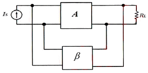
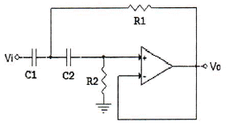
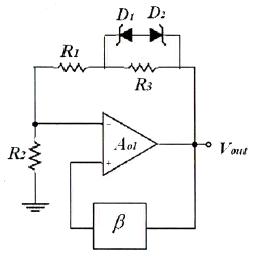
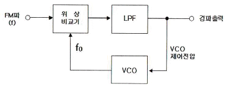
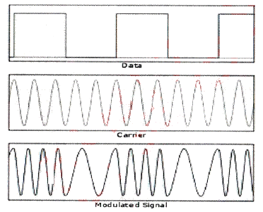
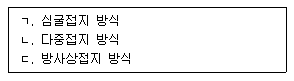
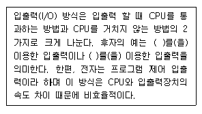
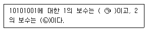
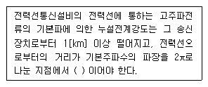

무선설비산업기사 (2015-03-07 기출문제)
1과목: 디지털 전자회로
1. 맥동률이 2.5[%]인 정류회로의 부하 양단 평균 직류전압이 220[V]일 경우 직류전압에 포함된 교류전압은 몇 [V]인가?
- 2.2[V]
- 3.3[V]
- 4.4[V]
- 5.5[V]
(정답률: 73%)

2. 정류기의 평활회로에 사용되는 필터(Filter)로 적합한 것은?
- 대역필터
- 대역소자
- 고역필터
- 저역필터
(정답률: 83%)
3. 3단 종속 전압 증폭기에서 이득이 각각 4배, 5배, 5배일 때 종합이득을 [dB]로 나타내면 얼마인가?
- 10[dB]
- 20[dB]
- 30[dB]
- 40[dB]
(정답률: 66%)
4. 다음 그림은 부궤환 연결방식 중 어떤 방식인가?

- 전류-직렬
- 전압-직렬
- 전류-병렬
- 전압-병렬
(정답률: 78%)
5. 다음 그림과 같은 회로는 어떤 필터(Filter) 역할을 하는가?

- HPF(High Pass Filter)
- LPF(Low Pass Filter)
- BPF(Band Pass Filter)
- BRF(Band Reject Filter)
(정답률: 76%)
6. 다음 중 효율이 가장 높은 증폭 방식은?
- A급
- B급
- AB급
- C급
(정답률: 88%)
7. 다음 중 발진기와 관련이 없는 것은?
- 부궤환
- 정궤환
- 수정편
- VCO
(정답률: 75%)
8. 다음 그림과 같은 윈 브리지 발진기에서 제너 다이오드의 역할을 무엇인가?

- 발진기의 출력전압을 제어하기 위한 것이다.
- 발진기의 자기 시동을 위한 장치이다.
- 폐루프 이득이 1이 되도록 한다.
- 궤환신호의 위상이 입력위상과 동상이 되도록 한다.
(정답률: 65%)
9. 다음 중 아날로그 변조 방식의 진폭변조(AM)에 대해 맞게 설명한 것은?
- 아날로그 정보 신호에 따라 반송파 신호의 진폭을 변화시키는 방식
- 반송파 신호에 따라 아날로그 정보 신호의 진폭을 변화시키는 방식
- 아날로그 정보 신호에 따라 반송파의 진폭과 위상을 변화시키는 방식
- 반송파 신호에 따라 아날로그 정보 신호의 위상을 변화시키는 방식
(정답률: 78%)
10. 다음 중 누화, 잡음 및 왜곡 등에 강하고 전송 특성의 질이 저하된 전송로에도 사용가능한 다중 전송방식은?
- AM 주파수분할 다중 전송방식
- FM 주파수분할 다중 전송방식
- PM 주파수분할 다중 전송방식
- PCM 시분할 다중 전송방식
(정답률: 83%)
11. 듀티 사이클(Duty Cycle)이 0.1이고 주기가 30[ms]인 펄스의 폭은 얼마인가?
- 0.3[ms]
- 1[ms]
- 3[ms]
- 10[ms]
(정답률: 83%)
12. 다음 중 클리퍼(Clipper) 회로에 대한 설명으로 옳은 것은?
- 입력 파형을 주어진 기준전압 레벨 이상 또는 이하로 잘라내는 회로
- 일정한 레벨 내에서 신호를 고정시키는 회로
- 특정 시각에 발진 동작을 시키는 회로
- 안정 상태와 준안정 상태를 번갈아 동작하는 회로
(정답률: 88%)
13. 2진코드를 그레이코드(Gray Code)로 변환하여 주는 논리식으로 맞는 것은?
- OR
- NOR
- XOR
- XNOR
(정답률: 81%)
14. 8진수 666.6을 10진수로 변환한 값은 얼마인가?
- 430.75
- 434.75
- 438.75
- 442.75
(정답률: 77%)
15. 부울 대수의 정리 중 틀린 것은?
- A + A = A
- A∙A = A
- (A∙B) = (A+B)
- A + B = B + A
(정답률: 77%)
16. 다음 중 순서 논리 회로에 대한 설명으로 틀린 것은?
- 입력 신호와 순서 논리 회로의 현재 출력상태에 따라 다음 출력이 결정된다.
- 조합 논리 회로는 사용할 수 없다.
- 순서 논리 회로의 예로 카운터 레지스터 등이 있다.
- 데이터의 저장 장소로 이용 가능하다.
(정답률: 83%)
17. 5비트 리플 카운터(Ripple Counter)의 입력에 4[MHz]의 구형파를 인가할 때, 최종단 플립플롭의 주파수는?
- 125[kHz]
- 250[kHz]
- 500[kHz]
- 800[kHz]
(정답률: 66%)
18. 여러 개의 입력선 중에서 하나를 선택하여 출력선에 연결하는 조합 논리회로를 무엇이라고 하는가?
- 멀티플렉서(Multiplexer)
- 인코더(Encoder)
- 디코더(Decoder)
- 채널(Channel)
(정답률: 87%)
19. 다음 중 M×N 디코더(Decoder)에 대한 설명으로 틀린 것은?
- AND 회로의 집합으로 구성할 수 있다.
- 2진수를 10진수로 변환하는 회로이다.
- 10진수를 BCD로 표현할 때 사용한다.
- 명령 해독이나 번지를 해독할 때 사용한다.
(정답률: 77%)
20. 다음 중 전원이 차단되었을 때 데이터가 지워지는 소자는?
- EPROM(Erasable Programmable Read Only Memory)
- EEPROM(Electrically Erasable Programmable Read Only Memory)
- NVRAM(Non-volatile Random Access Memory)
- SDRAM(Synchronous Dynamic Random Access Memory)
(정답률: 78%)
2과목: 무선통신 기기
21. 다음 그림과 같이 위상비교기, 저역필터, 전압제어발진기(VCO)로 구성된 부궤환 회로는 무엇인가?

- PLL 회로
- BFO 회로
- 스켈치 회로
- 디엠파시스 회로
(정답률: 76%)
22. 다음중 FM 수신기에서만 사용되는 것은?
- 국부 발진기
- 대역통과 필터
- 주파수 변환기
- 주파수 변별기
(정답률: 66%)
23. 다음 그림은 어느 파형인가?

- ASK
- FSK
- PSK
- QAM
(정답률: 71%)
24. 다음 중 디지털 변조 통신 방식에 대한 설명으로 틀린 것은?
- 진폭 편이 변조(ASK)는 정현파의 진폭에 정보를 싣는 방식으로 2진 내지 4진 폭을 이용하며 저속 통신에 이용된다.
- 주파수 편이 변조(FSK)는 정현파의 주파수에 정보를 싣는 방식으로 2가지의 주파수를 이용하며 중, 저속 통신에 이용된다.
- 위상 편이 변조(PSK)는 정현파의 위상에 정보를 싣는 방식으로 2,4,8,16진 방식이 있으며 중, 고속 통신에 이용된다.
- 직교 진폭 변조(QAM)는 정현파의 진폭과 주파수에 정보를 싣는 방식으로 저속 통신에 이용된다.
(정답률: 82%)
25. PCM(Pulse Code Modulation) 방식에서 아날로그 신호를 디지털 신호로 변환하는 과정에 속하지 않는 것은?
- 복호화(Decoding)
- 표본화(Sampling)
- 양자화(Quantization)
- 부호화(Coding)
(정답률: 87%)
26. 마이크로파 통신에서 둘 이상의 수신 안테나를 서로 다른 장소에 설치하고 이 두 수신 안테나의출력을 합성 또는 양호한 출력을 선택 수신하여 페이딩의 영향을 줄이는 다이버시티 수신 방식은?
- 공간 다이버시티
- 주파수 다이버시티
- 편파 다이버시티
- 각도 다이버시티
(정답률: 87%)
27. 위성에서 수신한 기가헤르츠[GHz] 대의 주파수 신호처리를 위해 먼저 낮은 주파수로 변환하게 되는데, 이 변환이 이루어지는 수신측의 장치는?
- 디멀티플렉서(Demultiplexer)
- 다이플렉서(Diplexer)
- 다운 컨버터(Down Converter)
- 저잡음 증폭기(LNA)
(정답률: 81%)
28. 위성을 제어하기 위해서 위성에 있는 각 장치에 대한 상태와 위성의 위치 등을 지구국에 송신하는 기능을 수행하는 장치는?
- 텔레메트리 시스템
- 트랜스폰더 시스템
- 추진 시스템
- 자세궤도 제어 시스템
(정답률: 84%)
29. 입력전압 0.5[V]의 신호를 가해 5[V]의 증폭된 신호를 얻었다면 이때의 이득은 얼마인가? (단, 입출력 저항은 같다.)
- 20[dB]
- 30[dB]
- 44[dB]
- 55[dB]
(정답률: 70%)
30. CDMA 통신방식에서 이동국은 각각의 기지국을 활동, 후보, 이전, 잔여 집합으로 구분하는데 이는 무엇을 하기 위한 것인가?
- 위치 등록(Location Registration)
- 로밍(Roaming)
- 핸드 오버(Hand Over)
- 인증(Authentication)
(정답률: 70%)
31. 다음 중 수신기의 S/N 비를 개선하기 위한 방법으로 적합하지 않은 것은?
- 주파수 변환 이득을 크게 한다.
- 수신기 대역폭을 넓힌다.
- 믹서 전단에 저잡음 증폭기를 설치한다.
- 국부 발진기의 출력에 필터를 설치한다.
(정답률: 82%)
32. 입력교류전력이 60[W]이고 출력직류전력이 120[W]일 경우 정류효율은 몇 [%]인가?
- 50[%]
- 100[%]
- 200[%]
- 300[%]
(정답률: 77%)
33. 태양전지에서 만들어진 직류전기를 교류전기로 만들어주는 것은?
- 인버터
- 컨버터
- 광센서
- 콘트롤러
(정답률: 88%)
34. 다음 중 전력변환장치의 중화회로에 대한 설명으로 옳지 않는 것은?
- 중화회로는 중화용 콘덴서에 의한 것과 중화용 코일에 의한 것이 있다.
- 중화용 콘덴서에 의한 방법으로는 TR이나 진공관을 사용한다.
- 자기발진을 방지할 수 있다.
- 전압제어방식으로 공진을 유도한다.
(정답률: 68%)
35. 1,000[kHz]의 반송파신호가 3[kHz]의 신호파에 의해 진폭변조되었다면 AM 신호의 주파수 스펙트럼에 나타나는 성분은?
- 3[kHz], 6[kHz], 1,000[kHz]
- 997[kHz], 1,000[kHz], 1,003[kHz]
- 1,000[kHz], 1,003[kHz], 1,006[kHz]
- 994[kHz], 1,000[kHz], 1,006[kHz]
(정답률: 89%)
36. 다음 중 AM 수신기의 감도측정에 필요하지 않은 것은?
- 가변 감쇠기
- 피측정 수신기
- 의사 공중선
- 표준신호 발생기
(정답률: 56%)
37. 다음 중 송신기의 RF 간섭 및 변조파 특성을 측정하기에 적합한 계측기는?
- 오실로스코프
- 스펙트럼 분석기
- 레벨미터
- 멀티미터
(정답률: 80%)
38. 다음 중 수신기 시험을 할 경우 의사 공중선을 사용하는 이유로 옳은 것은?
- 표준입력 신호를 공급하기 위하여
- 수신기의 부차적 전파 발사를 억제하기 위하여
- 수신기의 입력레벨을 감쇠시키기 위하여
- 안테나에 의한 입력회로의 등가회로를 구성하기 위하여
(정답률: 74%)
39. 전원 회로에서 무부하시 전압이 200[V]이고 부하시 전압이 190[V]였다면 전압 변동률은 약 몇 [%]인가?
- 5[%]
- 7[%]
- 8[%]
- 10[%]
(정답률: 77%)
40. 장시간 부동충전방식으로 충전할 경우 축전지 각각의 특성에 따라 방전량에 차이가 발생하여 축전지의 충전전압이 달라져 충전부족 상태의 축전지가 생길 수 있다. 이런 문제점을 해결하기 위한 충전방식으로 적합한 것은?
- 급속충전방식
- 세류충전방식
- 균등충전방식
- 정전류충전방식
(정답률: 90%)
3과목: 안테나 개론
41. 다음 중 수직 안테나에서 복사된 전파로 자계가 대지에 대하여 수평인 파는?
- 수직편파
- 수평편파
- 원편파
- 타원편파
(정답률: 73%)
42. 비유전율(εS)이 4이고 비투자율(μS)이 1인 매질 내를 전파하는 전자파의 속도는 자유공간을 전파할 때와 비교하여 몇 배의 속도가 되는가?
- 1/2배
- 2배
- 4배
- 9배
(정답률: 75%)
43. 다음 중 전계와 자계에 대한 설명으로 옳은 것은?
- 자기력선은 발산이 있으나 전기력선은 없다.
- 전계와 자계 모두 에너지 보존법칙이 성립한다.
- 전계는 전류 및 자하에 의하여 형성된다.
- 전기력선은 항상 폐곡선을 형성한다.
(정답률: 86%)
44. 다음 중 급전선의 활용에 대한 설명으로 틀린 것은?
- 마이크로파용 파라볼라 안테나와 송신기까지는 일반적으로 단선식 75[Ω] 급전선을 사용하는 것이 좋다.
- Folded dipole 안테나는 300[Ω] 평행 2선식을 사용하여 중앙에서 급전한다.
- 소출력 SSB 송신기까지 50[Ω] 동축케이블을 사용하는 것이 손실이 적고 사용이 편리하다.
- 중ㆍ장파용의 역L형 안테나는 급전선이 별도로 없고 송신기까지 안테나선을 직접 연결하는 경우가 많다.
(정답률: 54%)
45. 다음 중 동축케이블의 고주파 저항에 영향을 미치는 요소와 관련이 없는 것은?
- 동축케이블 외부 도체 직경
- 동축케이블 내부 도체 직경
- 주파수
- 동축케이블의 내부 정전용량
(정답률: 63%)
46. 다음 중 비동조 급전선에 대한 설명으로 바르지 않은 것은?
- 급전선의 길이가 사용파장과 일정 비례관계를 갖지 않는다.
- 정합장치가 필요 없다.
- 전송효율이 높아 장거리 전송에 유리하다.
- 급전선에는 진행파만 존재한다.
(정답률: 65%)
47. 다음 중 안테나를 설계할 때 임피던스 정합 회로를 사용하는 이유로 적합하지 않은 것은?
- 왜율이나 이중상(Ghost) 발생을 방지하기 위하여
- 최대 전력을 전송하기 위하여
- 전송선로와 안테나 정합부에서 반사를 최소화하기 위하여
- 전송선로의 정재파비를 최대화하기 위하여
(정답률: 75%)
48. 금속봉(Post)에 의한 도파관의 정합에서 금속봉의 길이(L)를 λ/4로 할 경우 어떤 성분이 되는가?
- 유도성이 된다.
- 공진한다.
- 용량성이 된다.
- 감쇠기가된다.
(정답률: 75%)
49. 공급전력이 1[kW]일 때 공중선 전류가 10[A]인 안테나의 경우 안테나에 16[kW]의 전력을 공급하면 공중선 전류의 값은 얼마인가?
- 10[A]
- 20[A]
- 40[A]
- 80[A]
(정답률: 63%)
50. 다음 중 안테나의 길이를 줄이지 않고 안테나 고유주파수보다 높은 주파수에 공진시키기 위한 방법으로 적합한 것은?
- 안테나와 직렬로 코일을 접속한다.
- 안테나와 병렬로 코일을 접속한다.
- 안테나와 직렬로 콘덴서를 접속한다.
- 안테나와 병렬로 콘덴서를 접속한다.
(정답률: 65%)
51. 방사저항이 75[Ω]이고 손실저항이 20[Ω]인 안테나의 방사효율은 얼마인가?
- 약 21[%]
- 약 27[%]
- 약 42[%]
- 약 79[%]
(정답률: 64%)
52. 전계강도 100[μV/m]를 [dB]로 표현하면?
- 20[dB]
- 30[dB]
- 40[dB]
- 50[dB]
(정답률: 68%)
53. 다음 중 마이크로스트립 안테나의 장점이 아닌것은?
- 크기가 작다.
- 무게가 작다.
- 소형화가 가능하다.
- 장ㆍ중파 대역에 사용가능하다.
(정답률: 82%)
54. 다음 접지방식 중 접지저항이 큰 것에서 작은 순서로 바르게 배열된 것은?

- ㄱ-ㄴ-ㄷ
- ㄷ-ㄱ-ㄴ
- ㄴ-ㄱ-ㄷ
- ㄱ-ㄷ-ㄴ
(정답률: 73%)
55. 다음 중 VHF(Very High Frequency)와 UHF(Ultra High Frequency) 대역의 주파수 범위는?
- VHF : 300~3,000[MHz], UHF : 30~300[MHz]
- VHF : 3~30[MHz], UHF : 30~300[MHz]
- VHF : 30~300[MHz], UHF : 300~3,000[MHz]
- VHF : 30~300[MHz], UHF : 3~30[MHz]
(정답률: 84%)
56. 가시거리 외의 먼 곳까지 도달하고, 장애물 뒤쪽의 가리거리 밖에까지 전파되는 지상파는 무엇인가?
- 회절파
- 전리층파
- 지표파
- 직접파
(정답률: 79%)
57. 다음 중 대류권 산란파에 대한 설명으로 틀린 것은?
- 소출력의 송신기가 필요하다.
- 지리적 조건에 영향을 받지 않는다.
- 수신전계는 불규칙하게 변하나 비교적 안정하다.
- 기본 전파 손실은 매우 크다.
(정답률: 64%)
58. 다음 중 임계 주파수에 대한 설명으로 틀린 것은?
- 수직 입사파의 반사되는 주파수와 투과되는 주파수의 경계이다.
- 입사각이 클수록 거리가 짧을수록 낮아진다.
- 전리층을 투과하는 가장 낮은 주파수이다.
- 전리층을 반사되는 가장 높은 주파수이다.
(정답률: 59%)
59. 단파가 전리층을 통과하거나 반사될 때 전자나 공기분자와 충돌하여 감쇠량이 변해 발생하는 페이딩은?
- 간섭성 페이딩
- 편파성 페이딩
- 흡수성 페이딩
- 선택성 페이딩
(정답률: 74%)
60. 다음 중 태양잡음에 대한 설명으로 틀린 것은?
- 태양 활동이 정온한 때에는 흑체 방사나 흑점상공의 코로나(Corona)에서의 방사에 의해 발생한다.
- 지구상에서 본 태양이 보이는 입체각은 6.8×10[Sterad]로 작은 점과 같으나, 여기에서 강력한 잡음 전파가 발사하고 있다.
- 단파와 마이크로파대에서는 무시된다.
- 태양 활동이 맹렬할 때에는 아웃 버스트(Out Burst)나 태양전파 폭풍우에 의해 잡음이 발생한다.
(정답률: 80%)
4과목: 전자계산기 일반 및 무선설비기준
61. 다음 중 DRAM에 대한 설명으로 맞는 것은?
- 플립플롭 회로를 사용하여 만들어졌다.
- 모든 메모리 유형 중에서 가장 빠르다.
- 일반적으로 CPU의 레지스터나 캐시 메모리에만 사용된다.
- 저장된 데이터를 유지하기 위해 계속적으로 데이터를 새롭게 하는 것이 필요하다.
(정답률: 77%)
62. 다음 빈칸에 들어갈 내용이 순서대로 된 것은?

- 인터럽트, DMA
- DMA, IOP
- IOP, 인터럽트
- 인터럽트, 프로그램
(정답률: 68%)
63. 다음 괄호 안에 들어갈 내용이 순서대로 된 것은?

- ㉠ 01010110, ㉡ 01010111
- ㉠ 01010101, ㉡ 01010101
- ㉠ 01011010, ㉡ 01011011
- ㉠ 01011011, ㉡ 01011110
(정답률: 82%)
64. 다음 중 해밍코드에 대한 설명으로 틀린 것은?
- 오류를 검출 및 교정할 수 있다.
- 정보 비트의 길이에 따라 패리티 비트의 수가 결정된다.
- 한 비트당 최소한 두 번 이상의 패리티 검사가 이루어진다.
- 해밍코드에서 4개의 정보 비트를 체크하기 위한 최소한의 패리티 비트는 2개가 된다.
(정답률: 76%)
65. 사용자가 컴퓨터의 본체 및 각 주변장치 등을 가장 효율적이고 경제적으로 사용할 수 있도록 하는 프로그램을 무엇이라 하는가?
- 컴파일러(Compiler)
- 로더(Loader)
- 매크로(Macro)
- 운영체제(Operating System)
(정답률: 87%)
66. 다음 중 메모리의 기능과 디스크의 기능을 동시에 수행할 수 있는 비 휘발성 메모리를 무엇이라고 하는가?
- DMA(Direct Memory Access)
- VTL(Virtual Tape Library)
- Flash Memory
- SDRAM(Synchronous Dynamic Random Access Memory)
(정답률: 69%)
67. 다음 중 컴퓨터 프로그래밍 언어의 번역프로그램이 아닌 것은?
- 어셈블러
- 인터프리터
- 컴파일러
- 기호어
(정답률: 83%)
68. 다음 중 이미 완제품으로 출시된 프로그램 중에 존재하는 오류 또는 버그(Bug)를 수정하기 위하여 일부 파일을 변경해 주는 프로그램을 무엇이라 하는가?
- Bundle
- Freeware
- Shareware
- Patch
(정답률: 88%)
69. 프로그램의 에러나 디버깅 등의 목적을 수행하기 위해 메모리에 저장된 내용의 일부 또는 전부를 화면이나 프린터, 디스크 파일 등으로 출력하는 것을 무엇이라 하는가?
- 링커(Linker)
- 디버거(Debugger)
- 로더(Loader)
- 메모리 덤프(Memory Dump)
(정답률: 71%)
70. 다음 중 인터럽트의 우선순위가 가장 높은 것은 무엇인가?
- 전원 Reset 인터럽트
- 입출력 인터럽트
- 외부 인터럽트
- SVC(Supervisor Call)
(정답률: 81%)
71. 허가나 신고로 개설하는 무선국에서 이용할 특정한 주파수를 지정하는 것을 무엇이라 하는가?
- 주파수 할당
- 주파수 분배
- 주파수 지정
- 주파수 용도
(정답률: 70%)
72. "다른 무선국의 정상적인 운용을 방해하는 전파의 발사ㆍ복사 또는 유도”는 무엇에 대한 정의인가?
- 잡음
- 간섭
- 혼신
- 전파장애
(정답률: 72%)
73. 다음 중 무선설비산업기사의 기술운용에 의한 종사범위에 해당하지 않는 것은?
- 3[kW] 이하의 무선전신
- 3[kW] 이하의 팩시밀리
- 3[kW] 이하의 무선전화
- 규정된 무선설비 외에 1.5[kW] 이하의 무선설비
(정답률: 63%)
74. 다음 중 선박국용 초단파대 무선전화 장치의 적합성평가를 위한 전기적 시험항목으로 틀린 것은?
- 시동 후 2분 후에 정상 동작함을 확인
- 주파수 허용 편차
- 점유주파수대폭의 허용치
- 스퓨리어스발사의 허용치
(정답률: 86%)
75. 다음 중 해당 방송통신기자래 등이 적합성평가기준에 적합하지 않게 된 경우 1차 위반시의 행정처분은 무엇인가?
- 파기명령
- 수입중지
- 시정명령
- 생산중지
(정답률: 86%)
76. 다음 중 ‘방송통신기자재 등의 적합성평가에 관한 고시’에서 규정하는 용어의 정의로 틀린 것은?
- ‘사후관리’라 함은 적합성평가를 받은 기자재가 적합성평가기준대로 제조ㆍ수입 또는 판매되고 있는지 관련법에 따라 조사 또는 시험하는 것을 말한다.
- ‘기본모델’이란 방송통신기기 내부의 전기적인 회로ㆍ구조ㆍ성능이 동일하고 기능이 유사한 제품군 중 표본이 되는 기자재를 말한다.
- ‘파생모델’이란 기본모델과 전기적인 회로ㆍ구조ㆍ성능만 다르고 그 부가적인 기능은 동일한 기자재를 말한다.
- ‘무선 송ㆍ수신용 부품’이란 차폐된 함체 또는 칩에 내장된 무선 주파수의 발진, 변조 또는 복조, 증폭부 등과 안테나로 구성된 것으로 시스템에 하나의 부품으로 내장되거나 장착될 수 있는 것을 말한다.
(정답률: 85%)
77. 방송국에 지정된 공중선 전력이 500[W]인 경우 허용편차가 상한 5[%], 하한 10[%]라면 전파를 발사할 때 허용되는 공중선 전력은?
- 420~500[W]
- 450~525[W]
- 475~550[W]
- 500~575[W]
(정답률: 81%)
78. 무선설비는 사용 상태에서 통상 접하는 환경 변화의 경우에도 지장없이 동작할 수 있어야 한다. 다음 중 무선설비의 통상 접하는 환경 변화의 경우에 해당되지 않는 것은?
- 온도 및 습도
- 주간 및 야간
- 진동
- 충격
(정답률: 69%)
79. 다음 괄호 안에 들어갈 내용으로 맞는 것은?

- 100[μV/m] 이하
- 300[μV/m] 이하
- 500[μV/m] 이하
- 700[μV/m] 이하
(정답률: 58%)
80. 통신공사의 감리업무에서 무선설비 주요 기자재를 검수하는 방법 중 조회에 의한 검수 내용으로 맞는 것은?
- 검수방법은 감리사가 입회하여 재료 제작자의 시험설비나 공장시험장에서 시험을 실시하고 그 결과로 얻은 성적표로 검수한다.
- 감리사가 공공시험기관에 시험을 의뢰 요청하여 실시하고 그 시험성적 결과에 의하여 검수한다.
- 대상 기자재의 범위는 공사상 중요한 기자재 또는 특별 주문품, 신제품 등으로써 품질 성능을 판정할 필요가 있는 기자재로 한다.
- 규격을 증명하는 KS 등의 마크가 표시되어 있는 규격품이나 적절하다고 인정할 수 있는 품질증명이 첨부되어 있는 제품을 대상으로 한다.
(정답률: 85%)